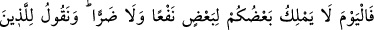
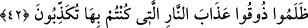

edilmekten veya hevâ ile ibâdet edilmekten münezzehim. Çünkü bana hevâ ile ibadet
eden hevâya ibâdet etmiştir. Bana ibadet konusunda hevâ ehlinin kendisine yardımıyla
bana ibâdet eden, hevâ ehline ibadet etmiş sayılır. Çünkü bu kimse benim kendisine
emrettiğim gibi bana ihlaslı olarak ibâdet etmemiştir.” buyurur.
İşte bu mânâdan dolayı Allah Teâlâ bize namazda kendisine ibadet ederken “yalnız
sana ibadet ederiz”, yâni senden başkasına ibadet etmeyiz ve başkasının yardımıyla
değil yalnız senin yardımınla sana ibadet etmek üzere “yalnız senden yardım isteriz”
(el-Fâtiha, 1/5) dememizi emretmiştir.
Allah Teâlâ “Çoğu onlara inanmıştı” sözüyle şuna işâret eder: Müslüman olduklarını
iddiâ edenlerin çoğu hevâ ehline inanırlar. Mensub oldukları bid’at ve kötü inançlarda
onları taklid ve tasdik ederler. et-Te’vîlâtü’n-Necmiyye’de böyle geçmektedir.
Sâib der ki:
Taklitle ne kadar yol kat edilebilir?
Yeni uçmayı öğrenen kuşun ipi kısa olur.
42. Bugün birbirinize ne fayda, ne de zarar vermeye gücünüz yeter. Biz zâlim
olanlara, yalanlamakta olduğunuz ateş azâbını tadın! diyeceğiz.
“Bugün” mahşer günü, “birbirinize” ibâdet edilenler ve ibâdet edenlere şefâat
ederek “ne fayda ne de zarar vermeye” zararı, yâni azabı uzaklaştırmaya “gücünüz
yeter.” Çünkü o gün bütün emir ve ferman tamamen Allah’a mahsustur. Çünkü orası
karşılıkların verildiği bir âlemdir. Yaratılmışlara Allah’tan başka kimse karşılık
veremez.
el-İrşâd’da der ki: “Mutlak olarak sâbit olduğu halde bu hükmün mahşer günü ile
kayıtlanması, onların o günde kendilerine kesin olarak fayda ulaşacağına dâir ümitlerini
iyice sağlam ve kuvvetli olduğu içindir.”
Bu söz, meleklere söylenen sözler cümlesindendir. Kâfirlerin kendilerine nisbet ettiği
şeylerden münezzeh ve beri olduklarını ifâde ederek cevap verdikleri zaman onlara
söylenmiştir. Meleklerin kendilerine ibâdet edenlerin yanında âcizliklerini ve
eksikliklerini ortaya koymak, ümidlerinin tamamen boşa çıkmasını gerektirecek durumu
kesin olarak ifâde etmek üzere herkesin huzûrunda onlara hitâb edilir.
Âhirette “Biz zâlim olanlara” inkâr edip yalanlayarak kendilerine haksızlık ederek
inkâr ve yalanlamayı îman ve tasdîkin yerine koyanlara: “Dünyadayken “yalanlamakta
olduğunuz” olmayacağını söylemekte ısrar ettiğiniz “ateş azabını tadın!” İşte onunla
karşı karşıya geldiniz, zannınız ve iddiânız boşa çıktı. “diyeceğiz.”
Bu söz kıyâmette meleklere söylenecek sözün peşinden meleklere ibadet edenlere